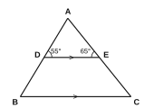
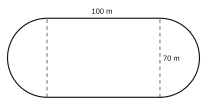

| For examiner's use only | |
|---|---|
| PART I – A | / 30 |
| PART I – B | / 20 |
| PART II | / 50 |
| Total | / 100 |
Part A – Answer all questions in the space provided. (2 marks each)
Write the general term of the number pattern 1, 4, 9, 16, … and find its 12th term.
Write the largest four-digit binary number and its value in base ten.
Simplify: 56 – 14 × 23
The price of an item was reduced from Rs 800 to Rs 680. Find the percentage reduction.
Factorise: a2 – 2a – 15
Write 18 as a power of 2.
Write 6.05 × 10−3 as an ordinary decimal number.
Solve: 0.5x + 3 = 8
Given 2a = 14, we get a = 7. Write the axiom used.
Three adjacent angles on a straight line are 2x, 3x and 4x. Find the value of x.
Find the perimeter of a quadrant (quarter of a circle) of radius 14 cm. (π = 227)
The length of a rectangle is 12 cm and its diagonal is 13 cm. Find its breadth.
Solve: x3 – 1 ≥ 2
A = {a, b, c}. Write all the subsets of A that have exactly two elements.
Each interior angle of a regular polygon is 160°. Find the number of sides.
Part B – Answer both questions on this paper. (10 marks each)
A and B are two posts 8 m apart on flat ground. A dog is tied to post A with a rope 5 m long. A water bowl P is to be placed where the dog can just reach it with the rope stretched, and at an equal distance from both posts.
A cuboid-shaped container measuring 40 cm × 25 cm × 30 cm is full of fruit juice.
Answer five questions only. (10 marks each)
The length y (cm) of a burning candle after x hours is shown in the table below.
| Time x (hours) | 0 | 1 | 2 | 3 | 4 |
|---|---|---|---|---|---|
| Length y (cm) | 20 | 17 | 14 | 11 | 8 |

(π = 227)

The bar chart shows the favourite fruits of a group of students.